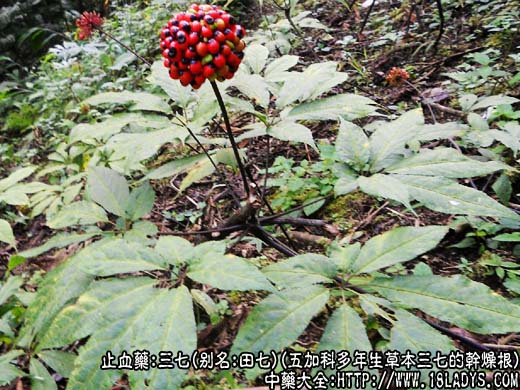
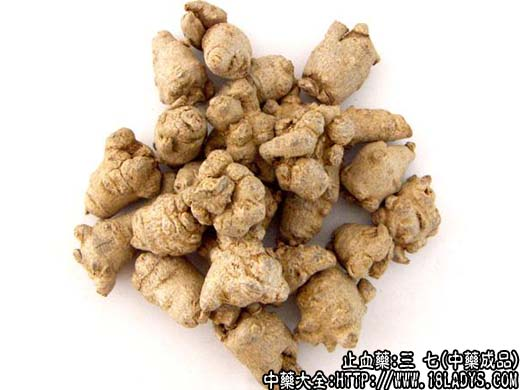
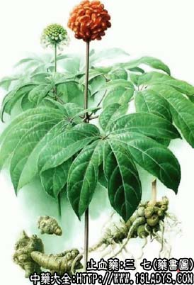

三七为常用中药。始载《本草纲目》。
别名：田七、田三七（因原产广西田阳）、金不换（因其珍贵）、旱三七（因与菊科水三七相区别）、人参三七（因与人参同科）。
来源：为五加科多年生草本植物三七的干燥根。均为栽培。
产地：主产于云南的文山、西畴，广西的田阳、靖西等地。
采收加工：挖取3～7年的根，去净泥土、剪除地上茎及细小支根、须根后，先曝晒至半干，再反复搓揉，曝晒至全干。七月份结籽前采收者体肥实称“春七”质佳。结籽采收者体较瘪瘦称“冬七”质次。
性状鉴别：主根纺锤形或不规则的块状，长约2～5厘米，直径0.3～2.5厘米。外皮呈光亮的灰绿色或带有黄斑（习称铜皮）或灰黄色（习称铁皮）。顶端较平或少数带有残茎，底部有剪断支根的痕迹，全体有凸起瘤状物或支根的分歧及横向皮孔，并有断续的纵皱纹。质坚实，难折断。横断面灰绿色或淡棕色，皮部与木部易分离，显菊花心，角质样。气弱，味先苦而后微甜。
以个大肥实，体重皮细，灰绿色有光泽，断面灰黑色带绿，无裂隙，习称“铜皮铁骨”者为佳。
主要成分：含三七皂甙甲、三七皂甙乙和黄酮甙。
功效与作用：止血、祛瘀、消肿、止痛。其药理为：
1、止血。三七温浸液能缩短家兔凝血时间，并有收缩血管作用。
2、消炎。三七水煎液对大鼠实验性关节炎有明显抑制作用。
3、增加冠脉流量。三七黄酮甙能明显增加心冠状动脉流量，同时心肌耗氧量减少。又三七水煎似具有糖质激素样作用。
注：抗病毒和抗真菌，三七水浸剂在体外实验对多种皮肤真菌有不同程度的抑制作用。
炮制：原药捣碎或磨成粉末，生用。
性味：甘、微苦、温。
归经：入肝、胃经。
功能：止血化瘀、消肿止血。
主治：外伤肿痛出血，吐衄血，血痢，崩漏，产后瘀血腹痛，痈肿疮毒。
临床应用：为止血化瘀要药。
1、治跌打内伤或外伤出血，有血瘀肿痛者尤为适宜，能祛瘀止血，消肿止痛，效果良好。内服可研末3g，米汤送服，用黄酒或白酒30g，微热送服均可，也可配其他汤药冲服。外用以三七1.5g，配煅龙骨、五倍子各15g，共研细末，敷于患处。
2、治吐血、肺胃出血，常配白芨、藕汁、茅根之类，方如安血饮，属热证者要加配生地以凉血。
治胃、十二指肠溃疡病的顽固疼痛，可服三七末配五味子、肉桂、丹皮、赤芍等。
4、治血液病出血，在治疗方剂内加三七末3g冲服，初步观察有一定止血作用，部分病人用药后血小板数明显上升。
5、试用于治脑出血（发病初期昏迷不语），可以用三七3g研末送服，配鸡血藤、磁石、竺黄精、石菖蒲、党参等。
此外，内服三七末对治疗冠心病也有一定帮助。
使用注意：血虚无瘀滞的吐血、衄血不宜用。又一般认为参三七的止血效力比竹节三七稍强，但竹节三七祛瘀消肿之力则较胜，用于跌打损伤更好。
用量：粉剂1.5～3g，最多可用至4.5～6g，病急者可每4～小时服一次。入煎剂用3～9g，但总以服粉剂（三七末）较好。
处方举例：1、安血饮：三七末3g（冲），白芨15g，藕汁1小杯（冲），白茅根30g，龙骨15g，牡蛎15g，制大黄6g，水煎服。
注：1、三七是一种珍贵药材，其栽培与生长情况与人参相似，一般三年产品多为200～300头，四年多为120～160头，5～6年多为80头。在商品上等级划分亦较细，每市斤20头者为1等，40头为2等，60头为3等，80头为4等。120头为5等，160头为6等，200头为7等，300头为8等（过去称大二外，小二外），450头以内为9等（又称煎口三七），主根上剪下的细小须根为11等。
2、菊科植物土三七（习称水三七）与正文所说的三七系同名异物，其新鲜或干燥的块根，亦用于治疗跌打损伤及咳血、衄血、便血等症。干燥的块根呈拳形、肥厚的不规则圆块状（似白术），长约3～10厘米、直径约3～7厘米。表面灰棕色或黄棕色。全体多有瘤状突起。在突起顶端常有茎基或芽痕，质坚实不易折断。纵切面可见灰黄色筋脉，横切面显菊花心状。味甘淡后微苦。
3、景天科植物景天三七的新鲜肉质带根全草，亦用于治疗吐血。咳血、衄血等症。各地多有使用。有的用干燥全草，有的只用根部。
以上三七粉的功效与作用，早上服用可增强免疫抗衰老，晚上服用可改善睡眠，希望对您有搜帮助，了解更多关于田七粉请关注中药大全。